Cách tạo chứng chỉ TLS cho một cụm Remote Desktop Gateway có tính sẵn sàng cao
Tác giả: Sassan Hajrasooliha
Ngày xuất bản: 22/02/2024
Chủ đề: Amazon EC2, Architecture, Security…
Giới thiệu
Trong bài viết này, tôi sẽ chỉ cho bạn cách tạo, nhập, kiểm tra và khắc phục sự cố một chứng chỉ Transport Layer Security (TLS) được tạo đúng cách cho một cụm Remote Desktop Gateway (RD Gateway).
Việc quản lý an toàn các phiên bản Amazon Elastic Compute Cloud (Amazon EC2) dành cho Microsoft Windows Server là ưu tiên hàng đầu của bất kỳ quản trị viên hệ thống hoặc đám mây nào quan tâm đến bảo mật. Một cách để quản lý an toàn các phiên bản của bạn là sử dụng một cụm RD Gateway có tính sẵn sàng cao. Tuy nhiên, việc tạo ra một chứng chỉ phù hợp cho giao tiếp dựa trên TLS an toàn không phải lúc nào cũng đơn giản.
Tôi sẽ trình bày chi tiết các thuộc tính của một chứng chỉ TLS phù hợp cho một cụm RD Gateway có tính sẵn sàng cao, hướng dẫn bạn cách triển khai chứng chỉ và sau đó chỉ cho bạn cách kiểm tra cụm sau khi triển khai chứng chỉ.
Tổng quan giải pháp
Kiến trúc được đề xuất được mô tả trong Hình 1:
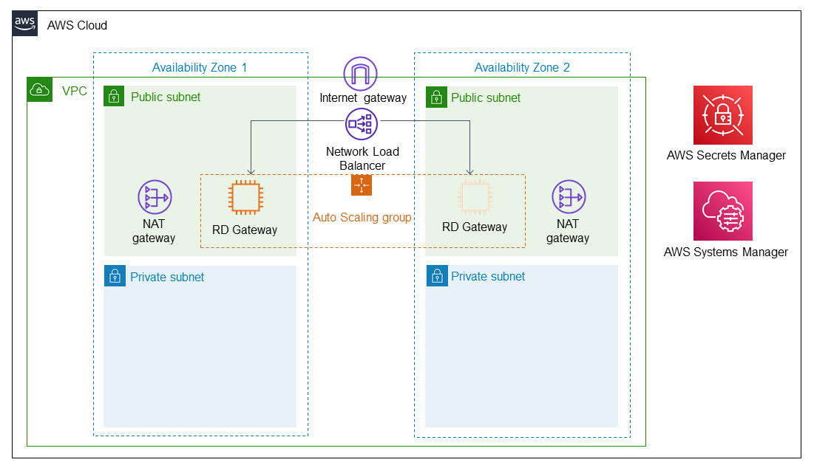 (Hình 1: Sơ đồ kiến trúc của một cụm RD Gateway có tính sẵn sàng cao trên AWS)
Amazon Web Services (AWS) khuyến nghị sử dụng AWS Launch Wizard cho Remote Desktop Gateway để triển khai cơ sở hạ tầng như vậy. AWS Launch Wizard đơn giản hóa quá trình triển khai, cấu hình và định cỡ các workload Windows Server chạy RD Gateway trên AWS, tuân thủ Khuôn khổ AWS Well-Architected. Các đợt triển khai bằng AWS Launch Wizard nhấn mạnh các phương pháp tốt nhất về tính sẵn sàng cao, khả năng chịu lỗi và bảo mật.
Điều kiện tiên quyết
Yêu cầu về chứng chỉ RD Gateway
Một bộ cân bằng tải AWS sẽ được triển khai như một phần của giải pháp này. Bạn sẽ sử dụng một tên DNS được gán cho bộ cân bằng tải này làm địa chỉ RD Gateway của mình khi thiết lập kết nối RDP. Tất cả giao tiếp giữa máy khách và gateway đều được bảo mật bằng TLS, vì vậy tên DNS này phải được bao gồm trong trường Common Name (CN) hoặc Subject Alternative Name (SAN) của chứng chỉ máy tính được cài đặt trên mỗi nút RD Gateway. Chứng chỉ ký tự đại diện (wildcard certificates - các chứng chỉ bao phủ toàn bộ không gian tên bằng *, như *.mydomain.com) cũng được chấp nhận.
Để tạo chứng chỉ RD Gateway, bạn có hai lựa chọn:
-
Tổ chức Chứng thực Công cộng (Public Certificate Authority - CA): Đây là trường hợp sử dụng phổ biến hơn vì các RD Gateway thường được công khai trên internet. Trong trường hợp này, bạn sẽ không thể tạo một chứng chỉ có tên DNS của điểm cuối bộ cân bằng tải trực tiếp trong các thuộc tính của nó. Điều này là do bạn sẽ không có quyền đối với miền “amazonaws.com”, miền được sử dụng để tạo tên DNS của bộ cân bằng tải. Thay vào đó, bạn có thể làm như sau:
- Tạo một bản ghi CNAME trong một vùng DNS mà bạn sở hữu và cho nó trỏ đến tên DNS của bộ cân bằng tải.
- Yêu cầu một chứng chỉ bao gồm bản ghi CNAME đó. Bạn có thể làm điều này vì bạn có quyền đối với vùng CNAME.
-
Tổ chức Chứng thực Nội bộ (Private Certificate Authority - CA) hoặc chứng chỉ tự ký (self-signed certificate): Trong trường hợp này, bạn có thể đặt tên DNS của bộ cân bằng tải trực tiếp vào các trường của chứng chỉ hoặc theo quy trình dựa trên CNAME tương tự, như đã thảo luận trước đó. Tổ chức Chứng thực bạn sử dụng cho bước này cần được tin cậy bởi các máy trạm khách sẽ kết nối đến cụm RD Gateway này để quản lý các phiên bản Amazon EC2 của bạn. Tham khảo tài liệu hệ điều hành máy khách của bạn để tìm hiểu cách thêm một chuỗi tin cậy CA vào cấu hình HĐH.
AWS khuyến nghị tuân theo phương pháp CNAME, bất kể loại CA nào, vì nó sẽ mang lại cho bạn sự linh hoạt hơn nếu bạn cần thực hiện các thay đổi kiến trúc cho giải pháp này sau này.
LƯU Ý: Về mặt kỹ thuật, bạn có thể đặt địa chỉ IP công cộng của bộ cân bằng tải vào chứng chỉ, nhưng việc mã hóa cứng địa chỉ IP trong bất kỳ cấu hình nào là một thói quen vận hành không tốt mà AWS không khuyến khích.
LƯU Ý: Nếu chứng chỉ của bạn có tiện ích mở rộng Enhanced Key Usage, hãy đảm bảo rằng “Server Authentication” hoặc “Remote Desktop Authentication” được liệt kê trong tiện ích mở rộng. Mã định danh đối tượng (OID) của chúng lần lượt là 1.3.6.1.5.5.7.3.1 và 1.3.6.1.4.1.311.54.1.2.
Cuối cùng, bạn sẽ cần có quyền truy cập vào khóa công khai và khóa riêng của chứng chỉ để cài đặt nó trên mỗi nút RD Gateway. Xin lưu ý rằng .pfx là định dạng tệp chứng chỉ trong Windows có cả khóa công khai và khóa riêng. Hãy chắc chắn rằng bạn có quyền truy cập vào tệp chứng chỉ và biết mật khẩu vì các tệp này thường được bảo vệ bằng mật khẩu. Tham khảo tài liệu CA của bạn để tìm hiểu cách tạo yêu cầu, gửi yêu cầu đến CA và lấy chứng chỉ cùng với khóa riêng.
Yêu cầu về nút RD Gateway
Tất cả các nút gateway phải có thông tin xác thực, Chính sách Ủy quyền Kết nối (Connection Authorization Policies - CAPs) và Chính sách Ủy quyền Tài nguyên (Resource Authorization Policies - RAPs) giống hệt nhau. Trong trường hợp bạn đã tạo RD Gateway theo cách thủ công trên các phiên bản Amazon EC2, bạn có thể tạo tên người dùng và mật khẩu giống hệt nhau trên mỗi phiên bản hoặc tham gia chúng vào một phiên bản Active Directory. CAPs và RAPs phải được tạo thủ công và giống hệt nhau trên các nút RD Gateway hoặc được đặt để lấy từ một máy chủ RADIUS trung tâm. Nếu bạn sử dụng AWS Launch Wizard, tất cả những điều này đã được xử lý cho bạn và bạn sẽ có một tên người dùng (mặc định là StackAdmin), mà bạn có thể sử dụng để xác thực với cụm RD Gateway.
Cấu hình chứng chỉ RD Gateway
Trong ví dụ này, tên miền của tôi là Awslaunchwizarddemos.com, vì vậy tôi sẽ tạo một bản ghi CNAME cho RDGateway.Awslaunchwizarddemos.com, với giá trị của nó là tên DNS của bộ cân bằng tải của tôi.
Nếu bạn đang sử dụng bộ cân bằng tải AWS, bạn có thể sử dụng giao diện điều khiển Amazon EC2 Load Balancer để xem tên DNS. Nếu bạn đã sử dụng AWS Launch Wizard để triển khai giải pháp, bạn có thể tìm thấy bộ cân bằng tải trong cửa sổ AWS Resource Groups -> Saved resource groups -> <Tên Nhóm Launch Wizard> -> Group resources (Hình 2 và 3).
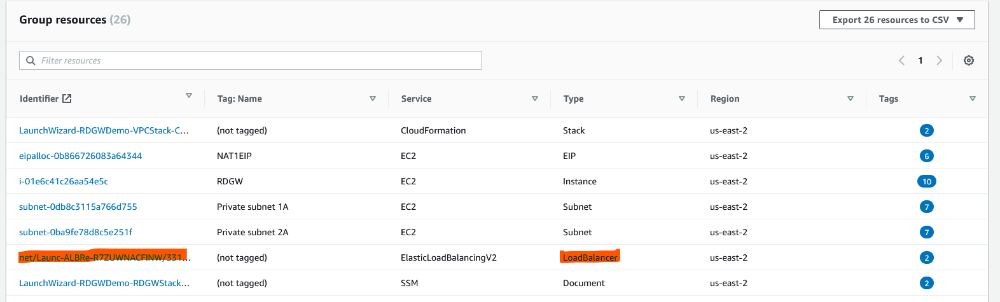 (Hình 2: Danh sách tài nguyên)
 (Hình 3: Tên DNS của Bộ cân bằng tải)
(Hình 3: Tên DNS của Bộ cân bằng tải)
Hướng dẫn chi tiết
-
Tạo bản ghi CNAME trong DNS của bạn. Đặt giá trị là tên DNS của bộ cân bằng tải.
-
Tạo một chứng chỉ sử dụng CNAME (
RDGateway.Awslaunchwizarddemos.com, trong ví dụ này, hoặc tên ký tự đại diện là*.Awslaunchwizarddemos.com) làm CN của chứng chỉ. Hoặc, bạn có thể sử dụng giá trị CNAME làm một trong các Subject Alternative Names (SAN) của chứng chỉ. -
Khi bạn có tệp chứng chỉ
.pfx, hãy đăng nhập vào một trong các phiên bản Amazon EC2 của RD Gateway. Bạn có thể sử dụng tên người dùng và mật khẩu đã xác định trong các bước của AWS Launch Wizard hoặc sử dụng cặp khóa để lấy mật khẩu Administrator từ giao diện điều khiển Amazon EC2. Đăng nhập từ một địa chỉ IP mà bạn đã tạm thời cho phép thực hiện kết nối RDP trực tiếp đến các phiên bản Amazon EC2 của mình qua cổng 3389. Nếu bạn đã sử dụng AWS Launch Wizard để triển khai các phiên bản Amazon EC2 này, bạn có thể sử dụng bộ lọc thẻLaunchWizardResourceGroupID(Hình 4) để tìm các phiên bản gateway trong giao diện điều khiển Amazon EC2 nhanh hơn.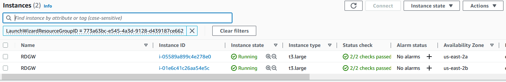 (Hình 4: Bộ lọc Nhóm tài nguyên)
-
Trên máy trạm cục bộ của bạn, nhấp chuột phải vào tệp
.pfxvà chọn copy, và trên phiên RDP của bạn, paste tệp vào một thư mục trên phiên bản (Hình 5).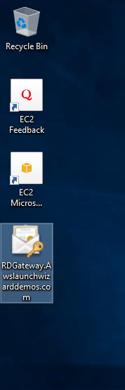 (Hình 5: Sao chép tệp PFX)
-
Xóa chứng chỉ tự ký, vì bạn sẽ sử dụng chứng chỉ được tạo bởi CA. Nhấn
Windows+R(Command + R nếu bạn đang sử dụng bàn phím MAC) để mở cửa sổ “Run”. Gõcertlm.mscvà chọn Enter. Chấp nhận yêu cầu nâng quyền UAC nếu nó xuất hiện. Thao tác này sẽ mở snap-in Local Machine Certificate Manager MMC (Microsoft Management Console). Điều hướng đến Personal -> Certificates. Bạn sẽ thấy một chứng chỉ tự ký có tênEC2AMAZ-*. Xóa chứng chỉ đó (Hình 6).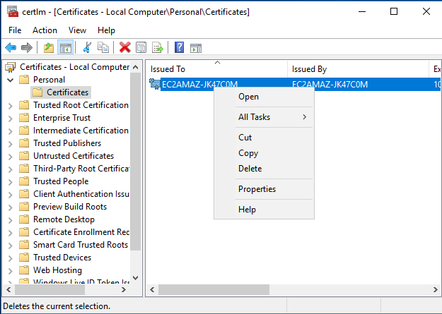 (Hình 6: xóa chứng chỉ tự ký)
-
Sau khi chứng chỉ tự ký bị xóa, nhấn lại các nút
Windows+R(Command+R). Lần này, gõtsgateway.msc. Thao tác này sẽ mở RD Gateway Manager MMC. Nếu bạn thấy cảnh báo như trong Hình 7, hãy nhấp vào No. (Hình 7: cảnh báo không khớp chứng chỉ)
(Hình 7: cảnh báo không khớp chứng chỉ) -
Đánh dấu máy chủ (Hình 8). Trong ngăn chính của MMC, bạn sẽ thấy một dấu cảnh báo ghi “<Tên Nút> is not yet fully configured as a RD Gateway server”. Nó cũng hiển thị một tác vụ cấu hình đang chờ xử lý để cài đặt chứng chỉ (Hình 8).
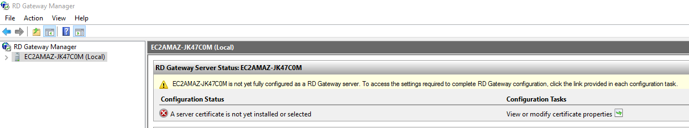 (Hình 8: Cấu hình chứng chỉ đang chờ xử lý)
-
Để giải quyết thông báo cảnh báo, hãy nhấp vào View or modify certificate properties. Sau đó chọn Import a certificate into the RD Gateway (Hình 9). Nhấp vào Browse and Import Certificate…
 (Hình 9: Thuộc tính Gateway)
(Hình 9: Thuộc tính Gateway) -
Chọn chứng chỉ
.pfx. Nó sẽ yêu cầu mật khẩu. Nhập mật khẩu và nhấp OK trên tất cả các hộp thoại đang mở. Để dịch vụ tự khởi động lại khi được nhắc (Hình 10 đến 12).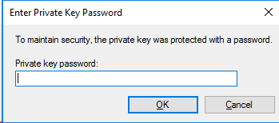 (Hình 10: Lời nhắc mật khẩu tệp PFX)
 (Hình 11: thông báo nhập pfx thành công)
(Hình 11: thông báo nhập pfx thành công)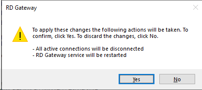 (Hình 12: cảnh báo khởi động lại dịch vụ RD)
-
Cảnh báo trên cửa sổ chính của RD Gateway Manager bây giờ đã biến mất. (Hình 13).
 (Hình 13: đã xóa cảnh báo)
(Hình 13: đã xóa cảnh báo) -
Đăng xuất khỏi phiên bản này. Lặp lại các bước tương tự trên tất cả các nút RD Gateway khác để nhập chứng chỉ trên tất cả chúng.
-
Bây giờ bạn đã cấu hình xong chứng chỉ cho các nút gateway, vì vậy bạn không cần khả năng RDP trực tiếp đến chúng nữa. Bây giờ bạn sẽ xóa tất cả các quy tắc trong Nhóm bảo mật được đính kèm vào các phiên bản gateway cho phép kết nối trực tiếp đến cổng 3389 (Hình 14).
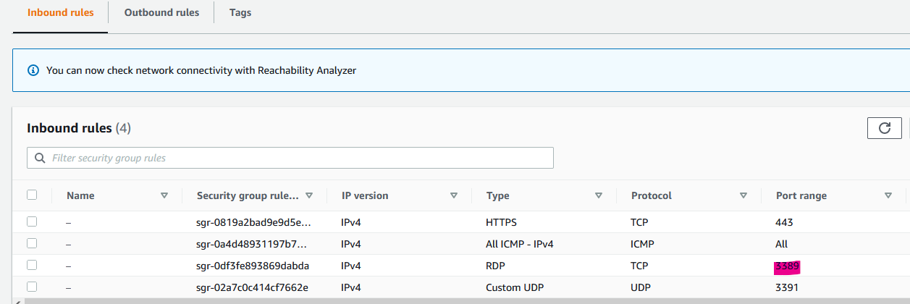 (Hình 14: Dọn dẹp Nhóm bảo mật)
Kiểm tra
Để kiểm tra cụm RD Gateway mới, hãy khởi chạy một phiên bản Amazon EC2 trong một trong các subnet riêng tư của VPC của bạn. Khi chọn nhóm bảo mật (SG) cho phiên bản này, hãy đảm bảo bạn chọn (hoặc tạo) một SG cho phép các cổng TCP 3389 và UDP 3389 chỉ từ SG được đính kèm vào các phiên bản RD Gateway (Hình 15).
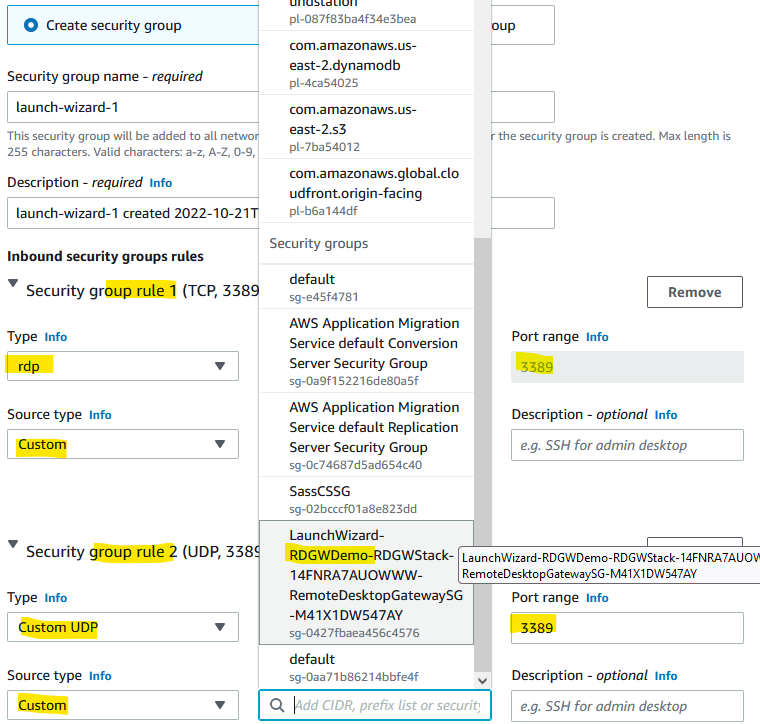 (Hình 15: chọn SG chính xác cho một phiên bản riêng tư)
Khi phiên bản đích để kiểm tra đã sẵn sàng, hãy kết nối với nó thông qua bộ cân bằng tải như sau:
-
Mở ứng dụng Remote Desktop Connection. Nhấp vào Show Options (Hình 16).
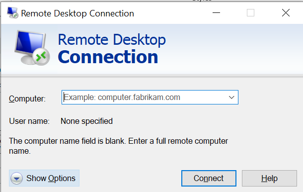 (Hình 16: Tùy chọn RDP)
-
Nhấp vào Advanced -> Connect from anywhere -> Settings để mở cài đặt RD Gateway. Nhập địa chỉ CNAME của bạn vào đây. Nếu các phiên bản RD Gateway và phiên bản đích của bạn được tham gia vào cùng một cơ sở hạ tầng Active Directory (AD) (hoặc một cơ sở hạ tầng khác, nhưng được kết nối thông qua một AD Trust), bạn có thể tùy chọn chọn mục Use my RD Gateway credentials for the remote computer. Trong ví dụ này, chúng ta hãy giữ cho nó đơn giản, vì không có phiên bản nào trong số này được tham gia AD (Hình 17).
 (Hình 17: Xác định RDP Gateway)
(Hình 17: Xác định RDP Gateway) -
Nhấp vào tab General, sao chép địa chỉ IP riêng của phiên bản kiểm tra vào trường Computer (Hình 18). Nhấp vào Connect.
 (Hình 18: IP riêng làm đích)
(Hình 18: IP riêng làm đích) -
Bây giờ bạn sẽ thấy hộp thoại thông tin xác thực đầu tiên (Hình 19).
 (Hình 19: Lời nhắc Đăng nhập RD Gateway)
(Hình 19: Lời nhắc Đăng nhập RD Gateway) -
Nếu bạn đã sử dụng AWS Launch Wizard, hãy nhập thông tin xác thực người dùng bạn đã xác định trong đó. Sử dụng tiền tố
.\(ví dụ:.\StackAdminnếu bạn đã sử dụng tên mặc định) để sử dụng thông tin xác thực cục bộ. Nếu không, hãy sử dụng tên người dùng giống hệt nhau được tạo thủ công hoặc tên người dùng Active Directory, nếu các phiên bản của bạn được tham gia miền. -
Sau khi xác thực, bạn sẽ được nhắc lại thông tin xác thực. Lần này, nó sẽ dành cho máy chủ đích thực tế. Bạn có thể phân biệt hai lời nhắc này bằng tiêu đề của chúng. Lấy thông tin xác thực cho mục tiêu kiểm tra từ giao diện điều khiển Amazon EC2 và nhập vào (Hình 20).
 (Hình 20: lời nhắc đăng nhập phiên bản riêng tư)
(Hình 20: lời nhắc đăng nhập phiên bản riêng tư) -
Bạn có thể thấy một cảnh báo chứng chỉ và tự hỏi tại sao bạn vẫn nhận được cảnh báo này mặc dù đã thực hiện tất cả các quy trình về chứng chỉ. Cảnh báo này đến từ máy chủ đích chứ không phải từ bộ cân bằng tải hoặc RD Gateway của bạn. Thêm thông tin có thể được tìm thấy tại đây. Cho mục đích kiểm tra, bạn có thể an toàn chọn Yes nếu bạn thấy cảnh báo chứng chỉ này (Hình 21).
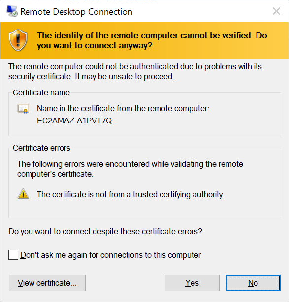 (Hình 21: cảnh báo tin cậy chứng chỉ tự ký)
-
Ta-da! Bạn đã kết nối với một máy chủ trong một subnet riêng tư không có IP công cộng, không có VPN và không có ánh xạ cổng bên ngoài thông qua cụm RD Gateway của mình. Tận hưởng việc triển khai của bạn nhé.
Một lưu ý về cấu hình chính sách của người dùng
Bạn có thể gặp phải lỗi này (Hình 22): “Remote Desktop không thể kết nối đến máy tính từ xa “<tên hoặc địa chỉ IP>” vì một trong những lý do sau:
- Tài khoản người dùng của bạn không có trong danh sách cấp phép của RD Gateway.
- Có thể bạn đã chỉ định máy tính từ xa ở định dạng NetBIOS (ví dụ: computer1), nhưng RD Gateway đang mong đợi định dạng FQDN hoặc địa chỉ IP (ví dụ: computer1.fabrikam.com hoặc 157.60.0.1). Hãy liên hệ với quản trị viên mạng của bạn để được hỗ trợ.”
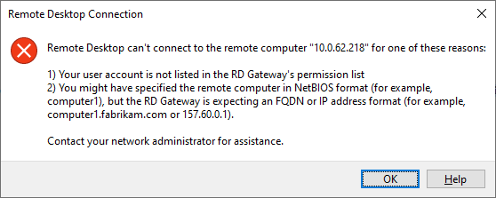 (Hình 22: Lỗi xác thực Gateway)
Khi làm việc với khách hàng, đặc biệt là những người triển khai thủ công các phiên bản Amazon EC2 gateway của họ, tôi đã thấy lỗi này ngay cả khi không có lý do nào trong hai lý do được đề xuất áp dụng. Nếu khách hàng đang sử dụng người dùng “Administrator” tích hợp sẵn thay vì “StackAdmin” (hoặc bất kỳ tên người dùng nào họ đã tạo trong quá trình triển khai), vấn đề có thể được tránh.
Lý do có thể của lỗi này là nếu “StackAdmin” chỉ là thành viên của nhóm “Administrators” và chính sách User Account Control (UAC) Admin Approval feature được bật trên RD Gateway, RAP của gateway không xác thực “StackAdmin” bằng token có đặc quyền cao hơn của nó. Thay vào đó, nó chọn token Người dùng Tiêu chuẩn, do đó từ chối quyền truy cập tài nguyên. Người dùng Administrator tích hợp sẵn, theo mặc định, không bật chế độ phê duyệt UAC Admin, vì vậy vấn đề này không xảy ra với nó.
Tôi đã tìm thấy các giải pháp thay thế sau:
- Vô hiệu hóa UAC cho tất cả quản trị viên thông qua cài đặt chính sách nhóm User Account Control: Run all administrators in Admin Approval Mode.
- HOẶC Làm cho người dùng “StackAdmin” của bạn trở thành thành viên của một nhóm khác, ngoài nhóm “Administrators” tích hợp sẵn, và bao gồm nhóm đó trong RAP của bạn. Xóa người dùng khỏi nhóm “Administrators” để tăng cường bảo mật sau khi RAPs và CAPs của bạn được điều chỉnh.
AWS Launch Wizard đã xử lý vấn đề này cho bạn, vì vậy điều này sẽ không xảy ra nếu bạn sử dụng phương pháp tự động của chúng tôi để triển khai các phiên bản Amazon EC2 gateway.
Kết luận
Trong bài viết này, tôi đã trình bày cách tạo và nhập chứng chỉ TLS phù hợp trên một RD Gateway để sử dụng như một phần của một cụm được cân bằng tải, mang lại cho bạn một cơ sở hạ tầng linh hoạt và an toàn để quản lý các phiên bản Amazon EC2 cho Windows Server.
Để biết thêm thông tin, hãy xem cách tạo chứng chỉ tự ký thông qua PowerShell, cách tạo tệp yêu cầu chứng chỉ, và khám phá tài liệu AWS Launch Wizard.
Để biết thông tin về nền tảng kỹ thuật liên quan đến Dịch vụ Máy tính Từ xa của Microsoft, hãy khám phá tài liệu Remote Desktop Services – Access from anywhere.
AWS có nhiều dịch vụ hơn đáng kể, và nhiều tính năng hơn trong các dịch vụ đó, so với bất kỳ nhà cung cấp đám mây nào khác, giúp việc di chuyển các ứng dụng hiện có của bạn lên đám mây và xây dựng gần như bất cứ thứ gì bạn có thể tưởng tượng trở nên nhanh hơn, dễ dàng hơn và hiệu quả hơn về chi phí. Cung cấp cho các ứng dụng Microsoft của bạn cơ sở hạ tầng cần thiết để thúc đẩy các kết quả kinh doanh bạn mong muốn. Ghé thăm các blog .NET trên AWS và Cơ sở dữ liệu AWS của chúng tôi để có thêm hướng dẫn và các tùy chọn cho các workload Microsoft của bạn. Liên hệ với chúng tôi để bắt đầu hành trình di chuyển và hiện đại hóa của bạn ngay hôm nay.
TAGS: Active Directory, Amazon EC2, Amazon Elastic Load Balancing, automation, AWS Launch Wizard, High availability, Microsoft, Windows On AWS, Windows Server
Sassan Hajrasooliha
Sassan là một Kiến trúc sư Giải pháp Chuyên gia Cấp cao của AWS; tập trung vào việc chạy các workload dựa trên Microsoft trên AWS một cách tối ưu. Anh đã làm việc như một chuyên gia CNTT từ năm 2003 và bao quát các công nghệ đa dạng từ các nhà cung cấp khác nhau trong ngành. Trong suốt sự nghiệp của mình, anh đã giúp các khách hàng từ các công ty khởi nghiệp đến các doanh nghiệp đa quốc gia và các cơ quan công quyền tận dụng tối đa các hệ thống CNTT của họ cho doanh nghiệp và sứ mệnh của mình.